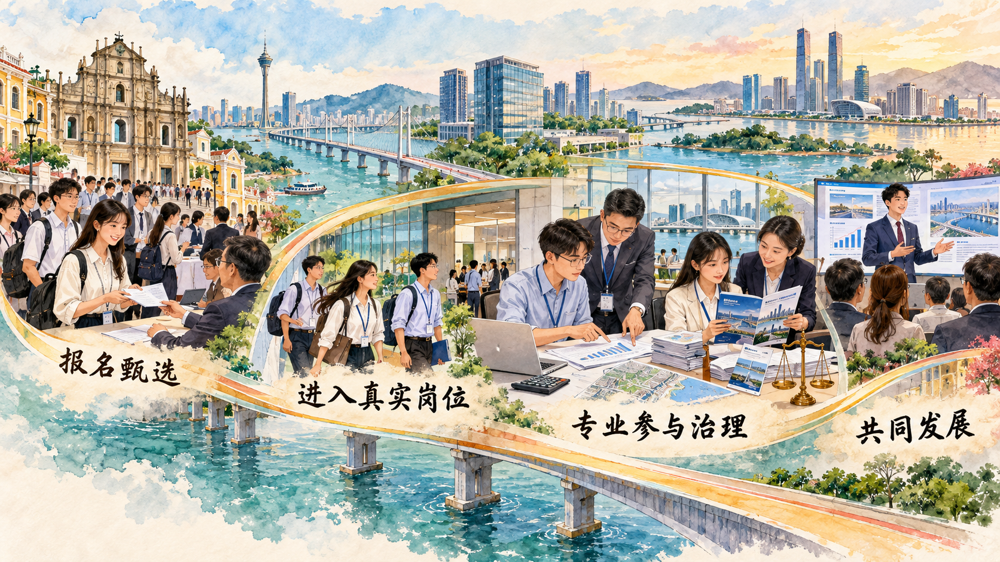

共同奋斗为什么既需要共同基础，也要容纳具体差异
现代化建设需要最广泛地凝聚人心、汇聚力量。统一战线以大团结大联合为本质要求，在共同政治基础上求同存异，找到最大公约数、画出最大同心圆。本节从统一战线的作用进入中华民族共同体建设，再通过澳门大学生横琴实习观察共同发展怎样形成青年可以参与的现实空间。
一、统一战线是凝聚人心、汇聚力量的强大法宝
统一战线在中国革命、建设和改革各个历史时期都发挥了重要作用。新时代统战工作面对更加多样的社会结构、利益关系和交往空间，需要坚持正确政治方向，尊重差异、包容多样，在共同目标和共同利益基础上形成团结合作。
最大公约数指能够团结各方面的共同政治基础和共同奋斗目标，同心圆则体现团结范围不断扩大。圆心清晰，团结才有方向；尊重具体差异、形成合作机制，半径才能扩大。统一战线通过沟通、协商、服务和共同实践，把不同群体的智慧和力量汇聚到民族复兴事业中。
参考资料｜最大公约数与同心圆
“大团结大联合”说明统一战线的本质要求，“求同存异”说明处理共同性与差异性的方法，“最大公约数”强调寻找能够共同奋斗的政治基础、目标和利益，“最大同心圆”强调在坚持圆心的基础上扩大团结范围。
共同基础为合作确定方向，具体差异使统战工作需要充分沟通。不同群体的职业、经历、生活环境和具体诉求可能不同，可以围绕国家发展、民族复兴和人民福祉形成共同目标，再通过协商和制度安排寻找合作空间。共同实践又会增加相互了解，使共同利益更加具体。
资料来源：本书第八章；中央统战部关于新时代爱国统一战线的公开资料；《中国共产党统一战线工作条例》。
二、铸牢中华民族共同体意识
中华民族是各民族长期交往交流交融形成的共同体。铸牢中华民族共同体意识，要引导各族人民树立休戚与共、荣辱与共、生死与共、命运与共的共同体理念，正确把握共同性和差异性、中华民族共同体意识和各民族意识、中华文化和各民族文化、物质和精神的关系。
共同体建设落实在共同生活、共同学习、共同工作和共同发展中。促进各民族交往交流交融，完善区域支持政策，提升公共服务和发展能力，使各族群众在共同建设和共享发展中增进认同。
三、加强和促进海内外中华儿女大团结
促进中华儿女大团结，是新时代爱国统一战线的重要责任。港澳同胞、台湾同胞和海外侨胞拥有不同生活经历和专业资源，在共同参与国家建设、区域合作和人文交流中形成更具体的联系。共同发展平台使宏观目标转化为学习、就业、创业和公共服务中的实际合作。
案例研究｜领到合作区工作证以后
2025 年 6 月 30 日，一批澳门大学生来到横琴粤澳深度合作区执行委员会报到。领取工作证后，他们分别进入财政、经济发展、行政事务、法律事务等工作机构。对一些学生来说，横琴此前是周末短途到访地；从这一天开始，他们要以工作人员的身份处理表格、材料、活动和公共事务。
这项专项实习由澳门特别行政区政府教育及青年发展局、横琴粤澳深度合作区民生事务局和澳门青年发展服务中心共同主办，面向澳门籍在校大学生招募。报名者提交身份证明、学生证明和个人履历，经过资料审核和单位面试后确定岗位。计划吸引 689 名学生报名，61 人入选，在 6 月 30 日至 8 月 22 日完成八周实习。
进入财政局的樊蔼恬参与政府投资项目财政接审预审。表格中的数字对应学校、道路和医院等公共项目，她由此开始理解公共资金怎样同居民生活连接。进入法律事务局的邝慧仪参与审核粤澳普法宣传视频、协助整理法律服务业政策申请，在具体材料中接触粤澳法律衔接和公共法律服务。其他学生分别在文化体育、人才服务、活动策划等岗位承担任务。
同一批实习生还进入城市规划和建设、经济发展、商事服务等机构。城市规划和建设局土地管制和资源利用处实习生何梓轩起初不熟悉项目文书，带教人员带他逐项辨认立项报告、批复、公函与实际建设环节的关系。一份规划文件不再只是抽象文字，而是同一片街区的用地、权益和项目进度相连。经济发展局会展岗实习生区闵然则从活动筹备中了解横琴会展行业怎样同澳门形成优势互补。
在横琴“澳门新街坊”24 小时自助服务中心，实习生李启宇协助澳门居民办理身份证、护照和证明书等事务。他遇到年长者或不熟悉系统操作的居民时，需要把屏幕上的办理步骤转换为耐心、清楚的现场引导。这个岗位让“琴澳公共服务衔接”成为一项可以观察的具体工作：设备提供办理入口，工作人员识别真实困难，服务对象的反馈又检验流程是否便利。
主办单位还安排行政复议普法讲座、合作区检察院开放日和建设主题参访。法律专题帮助学生认识内地行政复议和检察机关职能，建设主题展把合作区从昔日岛屿到现代城区的变化放入时间脉络。学生一方面完成岗位工作，另一方面比较澳门与横琴在行政、法律和公共服务中的制度接口。专业学习因此进入真实治理场景，琴澳协同也从地图上的区域概念变成需要共同完成的工作。

八周以后，学生在结营分享中重新讨论职业方向。2025 年合作区澳门青年实习计划还包括文创、重点产业、文旅体育等专项，全年共设置 5 个专项计划和 171 个岗位。有人参与十五运会网球赛事筹备，需要在中国网球协会、学校、运动员和裁判员之间协调体测场地与交通；有人为艺术展撰写推文、拍摄照片、对接视频剪辑；应用化学专业学生进入环保材料企业，从原材料处理、菌种培养一直做到数据检测和记录。共同发展由此表现为双向过程：合作区为青年提供公共治理和新产业的真实岗位，青年把专业知识、澳门经验和个人创造力带入合作区建设。
讨论题
- 澳门大学生进入财政、法律、文体等不同岗位，分别为他们理解横琴发展提供了哪些不可替代的经验？
- 如果实习只安排参观和讲座，不让学生承担真实工作任务，它对共同发展的理解会少掉什么？
- 从一项暑期实习发展为长期参与，还需要学校、公共部门、企业和青年分别创造哪些条件？
资料来源：澳门教育及青年发展局《2025 澳门大专学生内地实习计划》；横琴粤澳深度合作区民生事务局《“职”得更精彩！61 位澳门青年横琴实习进行时！》，2025 年 8 月 13 日；《以实习为笔，绘琴澳职场蓝图！这个专项实习计划顺利结营》，2025 年 8 月 27 日；《从“初体验”到“深参与”，澳门青年在横琴这样成长》，2025 年 12 月 10 日。